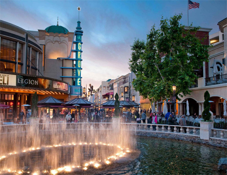
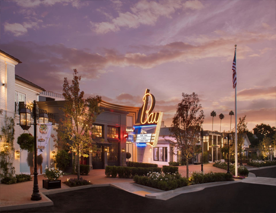
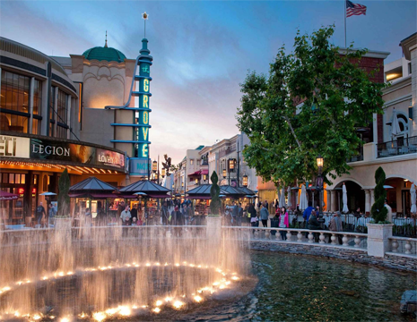
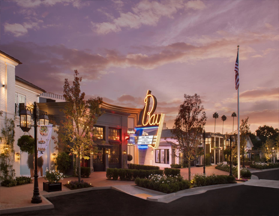

엘 마타도르 비치
엘 마타도르는 모래사장, 바다, 바위가 어울러져 아름다운 해변과 멋진 풍경들이 어울러진 비치입니다.

엘 마타도르는 모래사장, 바다, 바위가 어울러져 아름다운 해변과 멋진 풍경들이 어울러진 비치입니다.
영화 인셉션에 나왔던, 진귀한 풍경을 보실 수 있는 석양이 아름다운 바닷가입니다.

할리우드 영화로 자주 촬영되는 레오카릴로 주립 해변 공원은 방문할 가치가 있습니다. 지질 문제로 인해 주변의 암석이 매우 스릴 넘치고 현지인들이 모험과 캠핑을 좋아하는 곳입니다.

이 해변은 베니스와 말리부 사이에 위치하고 있으며 상대적으로 사람이 적고 최고의 해변 중 하나입니다. 여기에서 보는 태평양은 상상했던 것과 같습니다. 하얀 모래 해변은 매우 평평하고 시야가 선명하며 한 번에 수평선을 볼 수 있습니다.
엘 마타도르는 모래사장, 바다, 바위가 어울러져 아름다운 해변과 멋진 풍경들이 어울러진 비치입니다.
엘 마타도르는 모래사장, 바다, 바위가 어울러져 아름다운 해변과 멋진 풍경들이 어울러진 비치입니다.

엘 마타도르는 모래사장, 바다, 바위가 어울러져 아름다운 해변과 멋진 풍경들이 어울러진 비치입니다.
엘 마타도르는 모래사장, 바다, 바위가 어울러져 아름다운 해변과 멋진 풍경들이 어울러진 비치입니다.

영화 라라랜드의 촬영지로도 유명한 별자리도 볼 수 있는 밤의 야경이 매우 이쁜 박물관입니다.

도시와 멀리 떨어진 언덕위의 초대형 흰 건물이 자연과 조화롭게 세련되게 떨어지는 박물관입니다.

현역으로 은퇴한 전설의 USS군함인 IOWA호가 전시 박물관으로 새롭게 탈바꿈하였습니다.

박물관 앞 공원에 조성된 조명 전시가 매우 아름답기로 유명한 건물입니다.

엘 마타도르는 모래사장, 바다, 바위가 어울러져 아름다운 해변과 멋진 풍경들이 어울러진 비치입니다.

엘 마타도르는 모래사장, 바다, 바위가 어울러져 아름다운 해변과 멋진 풍경들이 어울러진 비치입니다.
엘 마타도르는 모래사장, 바다, 바위가 어울러져 아름다운 해변과 멋진 풍경들이 어울러진 비치입니다.
엘 마타도르는 모래사장, 바다, 바위가 어울러져 아름다운 해변과 멋진 풍경들이 어울러진 비치입니다.
엘 마타도르는 모래사장, 바다, 바위가 어울러져 아름다운 해변과 멋진 풍경들이 어울러진 비치입니다.

엘 마타도르는 모래사장, 바다, 바위가 어울러져 아름다운 해변과 멋풍경들이 어울러진 비치입니다.
엘 마타도르는 모래사장, 바다, 바위가 어울러져 아름다운 해변과 멋진 풍경들이 어울러진 비치입니다.
엘 마타도르는 모래사장, 바다, 바위가 어울러져 아름다운 해변과 멋진 풍경들이 어울러진 비치입니다.


 



130만 제곱피트의 이 멋진 센터는 최근에 보수공사를 마쳐 기억에 남을 만하고 사진 찍기에 좋은 장소가 되었습니다.
쇼핑몰인 웨스트필드 센추리시티와 20세기 폭스가 위치해있으며, 여러 투자회사와 연예 기획사들이 이 지역에 본사를 두고 있습니다.
1963년 도시 안의 도시라는 슬로건을 바탕으로 게이트웨이 웨스트 빌딩이 완공되며, 1964년에는 센추리 플라자 호텔, 1969년에는 센추리시티 메디컬 플라자가 완공되었습다.
약 2,400평의 거대한 규모를 자랑하는, 1982년 개장한 쇼핑몰입니다.
구찌, 루이비통, 디젤 등의 명품 브랜드를 비롯하여 자라, 빅토리아 시크릿 등 캐주얼 브랜드까지 100여 개 이상의 매장이 입점되어 있습니다.
블루밍데일즈, 메이시스와 같은 대형 백화점도 센터 내에 자리하고 있으며, 2016년 약 5억 달러를 투자한 리노베이션을 거쳐 깨끗하고 쾌적한 시설에서 쇼핑을 즐길 수 있습니다.
LA와 날씨와 맞물려 방문하기 좋은 쇼핑 단지이며, 굉장히 고급스러우면서도 비싸지 않은 가격에 즐길 수 있는 어트랙션들이 함께 있습니다.
필즈커피, 일리, 쉑쉑버거, 블루보틀 등 캘리포니아에서 유명한 프렌차이즈 등도 함께 있어 방문하여 여행을 알차게 즐기기에 훌륭한 장소입니다.
할리우드 스타들의 이름이 새겨진 '할리우드 명예의 거리'에 위치한, 약 70여 개의 브랜드 매장과 20여 개의 레스토랑이 입점한 복합 쇼핑 센터입니다.
매년 시상식이 열리는 '돌비 극장' 등의 관광명소들이 자리한 것으로 유명합니다.
특히 3층의 전망대에 서면 할리우드의 대표적인 간판 '할리우드 사인'이 보여 수많은 여행객이 찾아오고 있습니다.
각종 브랜드 매장과 레스토랑, 카페 등이 들어선 대규모 야외 쇼핑 센터로, 예능 프로그램 '나 혼자 산다'의 촬영지로 유명한 곳입니다.
폭넓은 쇼핑을 즐길 수 있는 다양한 카테고리의 매장이 있으며, 영화관과 스파, 레스토랑이 자리해 여유로운 시간을 보내기도 좋습니다.
대규모 먹거리 시장 '파머스 마켓'을 왕래하는 트롤리를 무료로 운행해 편리하게 이용할 수 있고, 크리스마스 시즌에 방문하면 곳곳을 일루미네이션과 트리로 꾸며 다양한 볼거리를 제공합니다.
팰리세이즈 빌리지는 일반적인 쇼핑몰과 달리 전형적인 미국의 메인 스트리트를 본떠 디자인한 야외 쇼핑센터로 소규모 매장과 백화점을 닮은 중·고급 부티크가 입점해 있습니다.
웨스트필드 센추리 시티와 더 그로브 앳 파머스 마켓 쇼핑몰도 인근에 있습니다.
빌리지 매장의 대부분은 여성 소유 기업이며, 대부분 매장 수가 적은 소규모 체인점입니다.
세포라 스튜디오, 샤넬 뷰티 등 빌리지에 매장이 있는 대형 체인 중 일부는 평균보다 작은 위치에서 운영됩니다.

로스앤젤레스의 나이트라이프는 야외에서 영화를 보거나, 할리우드 영화를
제작하는 스튜디오 투어를 하는 등 다양한 즐길거리로 가득해요.
밤늦게까지 여는 스파와 디저트 상점도 있어요. 어떤 곳은 밤새도록 문을 닫지
않아요. 밤늦도록 모두 즐길 수 있으니 어떤 것도 놓치지 마세요!